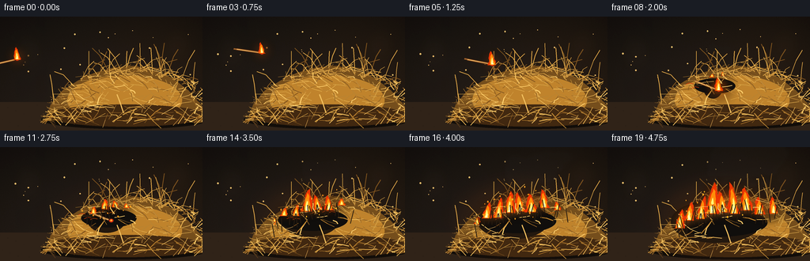
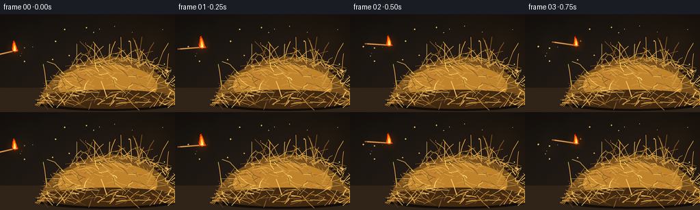

CODING AGENTS AS PIXEL WORLD MODELS
traex/GPT-5.6-Sol · material_0026
点击播放 · 原生 RGB 像素
逐轮保存的候选
回放视频、检查图与代码变化。
每份候选均可单独播放。实际图片检查记录在下方工具轨迹中。
候选 01播放与检查图
点击播放 · 原生 RGB 像素


展开代码变化
--- 上一保存版本
+++ 本次保存版本
@@ -0,0 +1,303 @@
+from pathlib import Path
+import math, random, json
+import numpy as np
+from PIL import Image, ImageDraw, ImageFilter
+import artifact_io
+
+CASE_DIR = Path(__file__).resolve().parent
+SPEC = json.loads((CASE_DIR / 'task_spec.json').read_text())
+W, H, N = SPEC['width'], SPEC['height'], SPEC['frames']
+S = 4
+WS, HS = W*S, H*S
+random.seed(2601)
+
+# ---------- shared geometry ----------
+def hay_top(x):
+ z = max(0.0, 1.0 - ((x-169.0)/108.0)**2)
+ return 130.0 - 67.0*math.sqrt(z) + 2.1*math.sin(x*.17) + 1.1*math.sin(x*.41)
+
+def sp(points):
+ return [(int(x*S), int(y*S)) for x,y in points]
+
+def ellipse(draw, box, fill, outline=None, width=1):
+ draw.ellipse(tuple(int(v*S) for v in box), fill=fill, outline=outline, width=max(1,int(width*S)))
+
+def line(draw, points, fill, width=1, joint='curve'):
+ draw.line(sp(points), fill=fill, width=max(1,int(width*S)), joint=joint)
+
+def polygon(draw, points, fill):
+ draw.polygon(sp(points), fill=fill)
+
+def smoothstep(x):
+ x=max(0.,min(1.,x)); return x*x*(3-2*x)
+
+# A stable heap of hundreds of individual dried grass blades.
+hay_back=[]; hay_mid=[]; hay_front=[]
+for i in range(480):
+ x=random.uniform(59,268)
+ top=hay_top(x)
+ y=random.uniform(top+1,132)
+ # mostly horizontally tangled stalks, with occasional steep pieces
+ ang=random.gauss(-0.04,0.52)
+ if random.random()<.14: ang=random.choice([-1,1])*random.uniform(.75,1.25)
+ length=random.uniform(8,30) * (0.65 + .35*(y-top)/max(1,132-top))
+ dx=math.cos(ang)*length/2; dy=math.sin(ang)*length/2
+ bend=random.uniform(-2.6,2.6)
+ pts=[(x-dx,y-dy),(x+bend,y-random.uniform(-1,1)),(x+dx,y+dy)]
+ item=(pts, random.random(), random.uniform(.55,1.35))
+ (hay_back if i<185 else hay_mid if i<390 else hay_front).append(item)
+# prominent loose stalks outlining the dry heap
+protruding=[]
+for i in range(78):
+ x=random.uniform(65,250); y=hay_top(x)+random.uniform(-1,5)
+ a=random.uniform(-2.85,-.28) if random.random()<.52 else random.uniform(-.1,.6)
+ L=random.uniform(13,39)
+ protruding.append(([(x,y+5),(x+math.cos(a)*L*.55,y+math.sin(a)*L*.55-2),(x+math.cos(a)*L,y+math.sin(a)*L)],random.random()))
+
+# Flame sites: center catches first, then the fire walks through adjacent dry hay.
+flame_sites=[
+ (132,0.00,42,17,0.1),(146,.08,35,15,-.18),(118,.12,32,13,.15),
+ (160,.23,39,16,-.12),(103,.36,31,14,.16),(176,.42,35,16,-.1),
+ (91,.56,26,12,.18),(193,.60,30,14,-.14),(210,.76,23,12,-.1)
+]
+
+# static background dust locations
+motes=[(random.uniform(10,246),random.uniform(15,111),random.uniform(.35,1.1),random.uniform(0,6.28)) for _ in range(32)]
+
+def base_scene(frame, fire_age):
+ # Warm, shallow-focus barn-like backdrop and earthen floor.
+ yy,xx=np.mgrid[0:HS,0:WS]
+ y=yy/S; x=xx/S
+ bg=np.zeros((HS,WS,3),dtype=np.float32)
+ bg[...,0]=24 + 16*(y/H) + 7*np.exp(-((x-215)**2+(y-45)**2)/9000)
+ bg[...,1]=20 + 11*(y/H) + 3*np.exp(-((x-215)**2+(y-45)**2)/9000)
+ bg[...,2]=17 + 7*(y/H)
+ # vignette and restrained texture
+ vig=1-.30*np.clip(((x-W/2)/(W*.70))**2+((y-H/2)/(H*.85))**2,0,1)
+ bg*=vig[...,None]
+ rng=np.random.default_rng(991)
+ noise=rng.normal(0,1.1,(HS,WS,1))
+ bg += noise
+ img=Image.fromarray(np.uint8(np.clip(bg,0,255)),'RGB').convert('RGBA')
+ # blurred background vertical timber suggestions
+ blur=Image.new('RGBA',(WS,HS),(0,0,0,0)); d=ImageDraw.Draw(blur,'RGBA')
+ for bx, col in [(26,(52,40,28,46)),(50,(12,12,12,40)),(225,(76,53,30,25))]:
+ d.rectangle((int(bx*S),0,int((bx+4)*S),int(108*S)),fill=col)
+ ellipse(d,(17,25,53,67),(92,69,42,16)); ellipse(d,(204,17,244,56),(109,74,35,13))
+ blur=blur.filter(ImageFilter.GaussianBlur(8*S)); img=Image.alpha_composite(img,blur)
+ # earth floor
+ floor=Image.new('RGBA',(WS,HS),(0,0,0,0)); fd=ImageDraw.Draw(floor,'RGBA')
+ fd.rectangle((0,108*S,WS,HS),fill=(47,35,24,255))
+ for k in range(55):
+ rx=(k*71%257); ry=111+(k*37%31); r=.3+(k%4)*.18
+ ellipse(fd,(rx-r,ry-r*.45,rx+r,ry+r*.45),(101,75,42,35))
+ # mound shadow
+ ellipse(fd,(52,118,264,142),(6,5,3,150))
+ img=Image.alpha_composite(img,floor)
+ # local firelight, cast onto surroundings before objects are drawn
+ if fire_age>0:
+ strength=smoothstep(fire_age)*.78
+ rad=np.sqrt(((x-143)/108)**2+((y-91)/70)**2)
+ glow=np.clip(1-rad,0,1)**2*strength
+ arr=np.asarray(img.convert('RGB')).astype(np.float32)
+ arr[...,0]+=96*glow; arr[...,1]+=41*glow; arr[...,2]+=5*glow
+ img=Image.fromarray(np.uint8(np.clip(arr,0,255))).convert('RGBA')
+ # floating dust, subtle and temporally coherent
+ dd=ImageDraw.Draw(img,'RGBA')
+ for mx,my,r,ph in motes:
+ yy0=my+1.2*math.sin(frame*.16+ph)
+ a=int(12+13*(.5+.5*math.sin(frame*.21+ph)))
+ ellipse(dd,(mx-r,yy0-r,mx+r,yy0+r),(226,181,104,a))
+ return img
+
+def draw_hay_layer(img, items, layer):
+ d=ImageDraw.Draw(img,'RGBA')
+ palettes=[[(104,72,31,180),(134,95,39,195),(81,54,26,170)],
+ [(176,126,49,220),(203,153,66,225),(142,96,36,215),(222,172,80,210)],
+ [(232,184,92,235),(184,126,45,240),(245,199,105,220),(124,79,28,230)]]
+ pal=palettes[layer]
+ for pts,r,wid in items:
+ c=pal[int(r*len(pal))%len(pal)]
+ line(d,pts,c,wid)
+ # bright broken center glint on select foreground fibers
+ if layer==2 and r>.72:
+ p0,p1,p2=pts
+ line(d,[p0,p1],(255,218,132,80),.38)
+
+def flame_polygon(cx,base,w,h,phase,tilt=0):
+ n=10; left=[]; right=[]
+ tipx=cx+tilt*h+math.sin(phase*1.31)*w*.08
+ for i in range(n+1):
+ q=i/n
+ yy=base-q*h
+ taper=(1-q)**.63
+ wav=math.sin(phase+q*10.4)*w*.075*(1-q)+math.sin(phase*.7+q*17)*w*.035
+ center=cx+tilt*h*q + math.sin(phase*.43+q*4.2)*w*.055*q
+ left.append((center-w*.5*taper+wav,yy))
+ right.append((center+w*.5*taper+wav,yy))
+ left[-1]=(tipx,base-h); right[-1]=(tipx,base-h)
+ return left+right[::-1]
+
+def draw_one_flame(layer,cx,base,w,h,phase,tilt,alpha=255):
+ d=ImageDraw.Draw(layer,'RGBA')
+ outer=flame_polygon(cx,base,w,h,phase,tilt)
+ polygon(d,outer,(226,53,4,alpha))
+ inner=flame_polygon(cx,base-.5,w*.69,h*.78,phase+1.9,tilt*.72)
+ polygon(d,inner,(255,137,10,alpha))
+ core=flame_polygon(cx,base-1,w*.34,h*.49,phase+3.6,tilt*.35)
+ polygon(d,core,(255,238,115,min(255,alpha)))
+ # tiny almost-white root gives heat intensity
+ if h>14:
+ polygon(d,flame_polygon(cx,base-1,w*.18,h*.24,phase+2.5,0),(255,250,201,min(230,alpha)))
+
+def draw_smoke(img, frame, age, match_head=None):
+ smoke=Image.new('RGBA',(WS,HS),(0,0,0,0)); d=ImageDraw.Draw(smoke,'RGBA')
+ # thin blue-gray thread from the flying match
+ if match_head is not None:
+ hx,hy=match_head
+ pts=[]
+ for j in range(9):
+ q=j/8; pts.append((hx-4*q+2*math.sin(q*5+frame*.4),hy-3-27*q))
+ line(d,pts,(108,105,96,70),1.2)
+ for j in (4,7):
+ x,y=pts[j]; ellipse(d,(x-2-j*.08,y-1.5,x+2+j*.08,y+1.5),(120,116,105,25))
+ if age>0.08:
+ # puffs rise and drift right; origins strengthen as the hay catches
+ streams=2+int(age*4)
+ for s in range(streams):
+ ox=126+s*13 + 3*math.sin(s*2.3)
+ for j in range(5):
+ q=(j+1)/5
+ y=73-q*(31+age*35) + 3*math.sin(frame*.22+s+j)
+ x=ox+q*(10+12*age)+5*math.sin(frame*.15+s*1.9+j*.7)
+ r=(2.0+j*1.7)*(0.65+age*.7)
+ a=int((14+age*27)*(1-q*.45))
+ ellipse(d,(x-r*1.45,y-r,x+r*1.45,y+r),(44,43,39,a))
+ smoke=smoke.filter(ImageFilter.GaussianBlur(2.2*S))
+ return Image.alpha_composite(img,smoke)
+
+def match_pose(frame):
+ if frame<=7:
+ u=frame/7
+ cx=7+124*u
+ cy=57 - 27*math.sin(math.pi*u) + 30*u
+ angle=math.radians(-13 + 34*u + 7*math.sin(u*math.pi*1.4))
+ return cx,cy,angle
+ # lodged between straw fibers, tip pointing into the mound
+ return 126.5,87.5,math.radians(21)
+
+def draw_match(img, frame, visible=True):
+ cx,cy,a=match_pose(frame); L=32
+ ux,uy=math.cos(a),math.sin(a)
+ tail=(cx-ux*L*.53,cy-uy*L*.53); head=(cx+ux*L*.47,cy+uy*L*.47)
+ d=ImageDraw.Draw(img,'RGBA')
+ if frame<7: # restrained motion smear emphasizes that it was thrown
+ line(d,[(tail[0]-4*ux,tail[1]-4*uy),(head[0]-4*ux,head[1]-4*uy)],(149,91,42,35),2.2)
+ if visible:
+ line(d,[tail,head],(91,48,19,255),3.0)
+ line(d,[tail,(head[0]-ux*3,head[1]-uy*3)],(223,167,91,255),1.55)
+ # match head and hot coal rim
+ ellipse(d,(head[0]-3.5,head[1]-2.8,head[0]+3.5,head[1]+2.8),(55,24,16,255))
+ ellipse(d,(head[0]-2.4,head[1]-2.0,head[0]+2.5,head[1]+2.0),(230,55,15,245))
+ ellipse(d,(head[0]-.8,head[1]-1.2,head[0]+1.2,head[1]+.8),(255,188,59,240))
+ return head
+
+def render(frame):
+ landing=7
+ age=max(0,(frame-landing)/(N-1-landing))
+ img=base_scene(frame,age)
+ # back half of heap
+ draw_hay_layer(img,hay_back,0)
+ d=ImageDraw.Draw(img,'RGBA')
+ # golden body mass beneath individual strands
+ body=[(57,131),(64,111),(78,94),(98,81),(119,71),(144,64),(169,62),(194,67),(217,77),(238,93),(258,116),(264,134)]
+ polygon(d,body,(112,75,28,215))
+ # soft interior highlights/shadows provide volume
+ ellipse(d,(85,74,230,137),(183,126,43,45)); ellipse(d,(59,111,260,139),(63,39,17,75))
+ draw_hay_layer(img,hay_mid,1)
+ # irregular silhouette stalks
+ for pts,r in protruding:
+ c=(211,158,69,220) if r>.25 else (121,80,30,210)
+ line(d,pts,c,.8 if r>.4 else 1.15)
+ # airborne smoke belongs behind the match and foreground flame
+ airborne_head=None
+ if frame<=7:
+ cx,cy,a=match_pose(frame); airborne_head=(cx+math.cos(a)*32*.47,cy+math.sin(a)*32*.47)
+ img=draw_smoke(img,frame,age,airborne_head)
+ d=ImageDraw.Draw(img,'RGBA')
+ # expanding, irregular charred pocket under the new fire
+ if age>0:
+ cr=7+age*45
+ ellipse(d,(132-cr,79-age*12,132+cr*1.22,102+age*19),(35,24,15,int(120+age*85)))
+ ellipse(d,(112-age*28,78,158+age*44,96+age*17),(17,15,13,int(45+age*75)))
+ # glowing fissures between blackened fibers
+ for j in range(13):
+ act=j/16
+ if age>act:
+ x=103+j*7.5; yy=hay_top(x)+10+(j%3)*4
+ line(d,[(x-4,yy+2),(x,yy),(x+5,yy+1)],(238,60+((j*9)%60),8,int(85+age*110)),.8)
+ # Match and its original tiny flame.
+ match_visible=(frame<=11)
+ head=draw_match(img,frame,match_visible)
+ if frame<=8:
+ flame=Image.new('RGBA',(WS,HS),(0,0,0,0))
+ flick=1+.12*math.sin(frame*1.7)
+ draw_one_flame(flame,head[0],head[1]+1,9*flick,16*flick,frame*.9,-.10,245)
+ # halo around lit match
+ hm=Image.new('RGBA',(WS,HS),(0,0,0,0)); hd=ImageDraw.Draw(hm,'RGBA')
+ ellipse(hd,(head[0]-11,head[1]-14,head[0]+11,head[1]+9),(255,105,13,65))
+ hm=hm.filter(ImageFilter.GaussianBlur(7*S)); img=Image.alpha_composite(img,hm)
+ img=Image.alpha_composite(img,flame)
+ # spreading flames; separate blurred bloom and crisp layered bodies
+ if age>0:
+ flames=Image.new('RGBA',(WS,HS),(0,0,0,0))
+ for idx,(cx,act,mh,mw,tilt) in enumerate(flame_sites):
+ p=smoothstep((age-act)/max(.001,1-act))
+ if p<=0: continue
+ # fire starts small but remains lively, not mechanically scaling
+ flick=.88+.13*math.sin(frame*1.43+idx*2.12)+.05*math.sin(frame*.61+idx)
+ h=(5+(mh-5)*p)*flick
+ w=(4+(mw-4)*math.sqrt(p))*(.95+.08*math.sin(frame*1.1+idx))
+ base=hay_top(cx)+11+min(8,p*8)
+ draw_one_flame(flames,cx,base,w,h,frame*1.15+idx*1.77,tilt,250)
+ # warm bloom derived from flames
+ bloom=flames.filter(ImageFilter.GaussianBlur(7*S))
+ # boost bloom opacity moderately
+ ba=np.array(bloom); ba[...,3]=np.clip(ba[...,3]*1.22,0,150).astype(np.uint8)
+ img=Image.alpha_composite(img,Image.fromarray(ba,'RGBA'))
+ img=Image.alpha_composite(img,flames)
+ # foreground hay stays sharply legible and some strands char as flames spread
+ draw_hay_layer(img,hay_front,2)
+ if age>.16:
+ fd=ImageDraw.Draw(img,'RGBA')
+ for j in range(26):
+ x=91+j*4.8
+ threshold=abs(x-132)/100+.12*(j%4)
+ if age>threshold:
+ top=hay_top(x)+random.Random(j).uniform(4,15)
+ col=(38,27,17,210)
+ line(fd,[(x,top+17),(x+random.Random(j+90).uniform(-5,5),top)],col,1.15)
+ if (j+frame)%7==0:
+ ellipse(fd,(x-1,top-1,x+1,top+1),(255,112,14,220))
+ # rising sparks / embers in front
+ if age>.12:
+ ed=ImageDraw.Draw(img,'RGBA')
+ for k in range(18):
+ birth=(k*.137)%1
+ q=(age*1.8+birth+frame*.018)%1
+ if q<age+.2:
+ ex=126+(k*19%76)-20 + 8*math.sin(q*6+k)
+ ey=91-q*(30+22*(k%4)/3)
+ r=.45+(k%3)*.18
+ a=int(230*(1-q))
+ ellipse(ed,(ex-r,ey-r*1.5,ex+r,ey+r*1.5),(255,143+5*(k%8),31,a))
+ # final subtle grade and downsample
+ rgb=img.convert('RGB').resize((W,H),Image.Resampling.LANCZOS)
+ arr=np.asarray(rgb).astype(np.float32)
+ # gentle cinematic contrast
+ arr=(arr-18)*1.055+18
+ return np.uint8(np.clip(arr,0,255))
+
+frames=np.stack([render(i) for i in range(N)],axis=0)
+artifact_io.save(frames,CASE_DIR)
+print('saved',frames.shape,frames.dtype)
可观测工具轨迹
实际执行的命令与返回图片。
命令 1exit 0
/bin/bash -lc "cat prompt.txt && printf '\\n---RULES---\\n' && cat GENERATION_RULES.md && printf '\\n---SPEC---\\n' && cat task_spec.json"
命令 2exit 0
/bin/bash -lc "find . -maxdepth 2 -type f -printf '%p\\n' | sort && printf '\\nTOOLS\\n' && command -v ffmpeg || true && command -v python3 || true && command -v convert || true"
命令 3exit 0
/bin/bash -lc 'cat artifact_io.py'
命令 4exit 0
/bin/bash -lc "cat > generate.py <<'PY'
from pathlib import Path
import math, random, json
import numpy as np
from PIL import Image, ImageDraw, ImageFilter
import artifact_io
CASE_DIR = Path(__file__).resolve().parent
SPEC = json.loads((CASE_DIR / 'task_spec.json').read_text())
W, H, N = SPEC['width'], SPEC['height'], SPEC['frames']
S = 4
WS, HS = W*S, H*S
random.seed(2601)
# ---------- shared geometry ----------
def hay_top(x):
z = max(0.0, 1.0 - ((x-169.0)/108.0)**2)
return 130.0 - 67.0*math.sqrt(z) + 2.1*math.sin(x*.17) + 1.1*math.sin(x*.41)
def sp(points):
return [(int(x*S), int(y*S)) for x,y in points]
def ellipse(draw, box, fill, outline=None, width=1):
draw.ellipse(tuple(int(v*S) for v in box), fill=fill, outline=outline, width=max(1,int(width*S)))
def line(draw, points, fill, width=1, joint='curve'):
draw.line(sp(points), fill=fill, width=max(1,int(width*S)), joint=joint)
def polygon(draw, points, fill):
draw.polygon(sp(points), fill=fill)
def smoothstep(x):
x=max(0.,min(1.,x)); return x*x*(3-2*x)
# A stable heap of hundreds of individual dried grass blades.
hay_back=[]; hay_mid=[]; hay_front=[]
for i in range(480):
x=random.uniform(59,268)
top=hay_top(x)
y=random.uniform(top+1,132)
# mostly horizontally tangled stalks, with occasional steep pieces
ang=random.gauss(-0.04,0.52)
if random.random()<.14: ang=random.choice([-1,1])*random.uniform(.75,1.25)
length=random.uniform(8,30) * (0.65 + .35*(y-top)/max(1,132-top))
dx=math.cos(ang)*length/2; dy=math.sin(ang)*length/2
bend=random.uniform(-2.6,2.6)
pts=[(x-dx,y-dy),(x+bend,y-random.uniform(-1,1)),(x+dx,y+dy)]
item=(pts, random.random(), random.uniform(.55,1.35))
(hay_back if i<185 else hay_mid if i<390 else hay_front).append(item)
# prominent loose stalks outlining the dry heap
protruding=[]
for i in range(78):
x=random.uniform(65,250); y=hay_top(x)+random.uniform(-1,5)
a=random.uniform(-2.85,-.28) if random.random()<.52 else random.uniform(-.1,.6)
L=random.uniform(13,39)
protruding.append(([(x,y+5),(x+math.cos(a)*L*.55,y+math.sin(a)*L*.55-2),(x+math.cos(a)*L,y+math.sin(a)*L)],random.random()))
# Flame sites: center catches first, then the fire walks through adjacent dry hay.
flame_sites=[
(132,0.00,42,17,0.1),(146,.08,35,15,-.18),(118,.12,32,13,.15),
(160,.23,39,16,-.12),(103,.36,31,14,.16),(176,.42,35,16,-.1),
(91,.56,26,12,.18),(193,.60,30,14,-.14),(210,.76,23,12,-.1)
]
# static background dust locations
motes=[(random.uniform(10,246),random.uniform(15,111),random.uniform(.35,1.1),random.uniform(0,6.28)) for _ in range(32)]
def base_scene(frame, fire_age):
# Warm, shallow-focus barn-like backdrop and earthen floor.
yy,xx=np.mgrid[0:HS,0:WS]
y=yy/S; x=xx/S
bg=np.zeros((HS,WS,3),dtype=np.float32)
bg[...,0]=24 + 16*(y/H) + 7*np.exp(-((x-215)**2+(y-45)**2)/9000)
bg[...,1]=20 + 11*(y/H) + 3*np.exp(-((x-215)**2+(y-45)**2)/9000)
bg[...,2]=17 + 7*(y/H)
# vignette and restrained texture
vig=1-.30*np.clip(((x-W/2)/(W*.70))**2+((y-H/2)/(H*.85))**2,0,1)
bg*=vig[...,None]
rng=np.random.default_rng(991)
noise=rng.normal(0,1.1,(HS,WS,1))
bg += noise
img=Image.fromarray(np.uint8(np.clip(bg,0,255)),'RGB').convert('RGBA')
# blurred background vertical timber suggestions
blur=Image.new('RGBA',(WS,HS),(0,0,0,0)); d=ImageDraw.Draw(blur,'RGBA')
for bx, col in [(26,(52,40,28,46)),(50,(12,12,12,40)),(225,(76,53,30,25))]:
d.rectangle((int(bx*S),0,int((bx+4)*S),int(108*S)),fill=col)
ellipse(d,(17,25,53,67),(92,69,42,16)); ellipse(d,(204,17,244,56),(109,74,35,13))
blur=blur.filter(ImageFilter.GaussianBlur(8*S)); img=Image.alpha_composite(img,blur)
# earth floor
floor=Image.new('RGBA',(WS,HS),(0,0,0,0)); fd=ImageDraw.Draw(floor,'RGBA')
fd.rectangle((0,108*S,WS,HS),fill=(47,35,24,255))
for k in range(55):
rx=(k*71%257); ry=111+(k*37%31); r=.3+(k%4)*.18
ellipse(fd,(rx-r,ry-r*.45,rx+r,ry+r*.45),(101,75,42,35))
# mound shadow
ellipse(fd,(52,118,264,142),(6,5,3,150))
img=Image.alpha_composite(img,floor)
# local firelight, cast onto surroundings before objects are drawn
if fire_age>0:
strength=smoothstep(fire_age)*.78
rad=np.sqrt(((x-143)/108)**2+((y-91)/70)**2)
glow=np.clip(1-rad,0,1)**2*strength
arr=np.asarray(img.convert('RGB')).astype(np.float32)
arr[...,0]+=96*glow; arr[...,1]+=41*glow; arr[...,2]+=5*glow
img=Image.fromarray(np.uint8(np.clip(arr,0,255))).convert('RGBA')
# floating dust, subtle and temporally coherent
dd=ImageDraw.Draw(img,'RGBA')
for mx,my,r,ph in motes:
yy0=my+1.2*math.sin(frame*.16+ph)
a=int(12+13*(.5+.5*math.sin(frame*.21+ph)))
ellipse(dd,(mx-r,yy0-r,mx+r,yy0+r),(226,181,104,a))
return img
def draw_hay_layer(img, items, layer):
d=ImageDraw.Draw(img,'RGBA')
palettes=[[(104,72,31,180),(134,95,39,195),(81,54,26,170)],
[(176,126,49,220),(203,153,66,225),(142,96,36,215),(222,172,80,210)],
[(232,184,92,235),(184,126,45,240),(245,199,105,220),(124,79,28,230)]]
pal=palettes[layer]
for pts,r,wid in items:
c=pal[int(r*len(pal))%len(pal)]
line(d,pts,c,wid)
# bright broken center glint on select foreground fibers
if layer==2 and r>.72:
p0,p1,p2=pts
line(d,[p0,p1],(255,218,132,80),.38)
def flame_polygon(cx,base,w,h,phase,tilt=0):
n=10; left=[]; right=[]
tipx=cx+tilt*h+math.sin(phase*1.31)*w*.08
for i in range(n+1):
q=i/n
yy=base-q*h
taper=(1-q)**.63
wav=math.sin(phase+q*10.4)*w*.075*(1-q)+math.sin(phase*.7+q*17)*w*.035
center=cx+tilt*h*q + math.sin(phase*.43+q*4.2)*w*.055*q
left.append((center-w*.5*taper+wav,yy))
right.append((center+w*.5*taper+wav,yy))
left[-1]=(tipx,base-h); right[-1]=(tipx,base-h)
return left+right[::-1]
def draw_one_flame(layer,cx,base,w,h,phase,tilt,alpha=255):
d=ImageDraw.Draw(layer,'RGBA')
outer=flame_polygon(cx,base,w,h,phase,tilt)
polygon(d,outer,(226,53,4,alpha))
inner=flame_polygon(cx,base-.5,w*.69,h*.78,phase+1.9,tilt*.72)
polygon(d,inner,(255,137,10,alpha))
core=flame_polygon(cx,base-1,w*.34,h*.49,phase+3.6,tilt*.35)
polygon(d,core,(255,238,115,min(255,alpha)))
# tiny almost-white root gives heat intensity
if h>14:
polygon(d,flame_polygon(cx,base-1,w*.18,h*.24,phase+2.5,0),(255,250,201,min(230,alpha)))
def draw_smoke(img, frame, age, match_head=None):
smoke=Image.new('RGBA',(WS,HS),(0,0,0,0)); d=ImageDraw.Draw(smoke,'RGBA')
# thin blue-gray thread from the flying match
if match_head is not None:
hx,hy=match_head
pts=[]
for j in range(9):
q=j/8; pts.append((hx-4*q+2*math.sin(q*5+frame*.4),hy-3-27*q))
line(d,pts,(108,105,96,70),1.2)
for j in (4,7):
x,y=pts[j]; ellipse(d,(x-2-j*.08,y-1.5,x+2+j*.08,y+1.5),(120,116,105,25))
if age>0.08:
# puffs rise and drift right; origins strengthen as the hay catches
streams=2+int(age*4)
for s in range(streams):
ox=126+s*13 + 3*math.sin(s*2.3)
for j in range(5):
q=(j+1)/5
y=73-q*(31+age*35) + 3*math.sin(frame*.22+s+j)
x=ox+q*(10+12*age)+5*math.sin(frame*.15+s*1.9+j*.7)
r=(2.0+j*1.7)*(0.65+age*.7)
a=int((14+age*27)*(1-q*.45))
ellipse(d,(x-r*1.45,y-r,x+r*1.45,y+r),(44,43,39,a))
smoke=smoke.filter(ImageFilter.GaussianBlur(2.2*S))
return Image.alpha_composite(img,smoke)
def match_pose(frame):
if frame<=7:
u=frame/7
cx=7+124*u
cy=57 - 27*math.sin(math.pi*u) + 30*u
angle=math.radians(-13 + 34*u + 7*math.sin(u*math.pi*1.4))
return cx,cy,angle
# lodged between straw fibers, tip pointing into the mound
return 126.5,87.5,math.radians(21)
def draw_match(img, frame, visible=True):
cx,cy,a=match_pose(frame); L=32
ux,uy=math.cos(a),math.sin(a)
tail=(cx-ux*L*.53,cy-uy*L*.53); head=(cx+ux*L*.47,cy+uy*L*.47)
d=ImageDraw.Draw(img,'RGBA')
if frame<7: # restrained motion smear emphasizes that it was thrown
line(d,[(tail[0]-4*ux,tail[1]-4*uy),(head[0]-4*ux,head[1]-4*uy)],(149,91,42,35),2.2)
if visible:
line(d,[tail,head],(91,48,19,255),3.0)
line(d,[tail,(head[0]-ux*3,head[1]-uy*3)],(223,167,91,255),1.55)
# match head and hot coal rim
ellipse(d,(head[0]-3.5,head[1]-2.8,head[0]+3.5,head[1]+2.8),(55,24,16,255))
ellipse(d,(head[0]-2.4,head[1]-2.0,head[0]+2.5,head[1]+2.0),(230,55,15,245))
ellipse(d,(head[0]-.8,head[1]-1.2,head[0]+1.2,head[1]+.8),(255,188,59,240))
return head
def render(frame):
landing=7
age=max(0,(frame-landing)/(N-1-landing))
img=base_scene(frame,age)
# back half of heap
draw_hay_layer(img,hay_back,0)
d=ImageDraw.Draw(img,'RGBA')
# golden body mass beneath individual strands
body=[(57,131),(64,111),(78,94),(98,81),(119,71),(144,64),(169,62),(194,67),(217,77),(238,93),(258,116),(264,134)]
polygon(d,body,(112,75,28,215))
# soft interior highlights/shadows provide volume
ellipse(d,(85,74,230,137),(183,126,43,45)); ellipse(d,(59,111,260,139),(63,39,17,75))
draw_hay_layer(img,hay_mid,1)
# irregular silhouette stalks
for pts,r in protruding:
c=(211,158,69,220) if r>.25 else (121,80,30,210)
line(d,pts,c,.8 if r>.4 else 1.15)
# airborne smoke belongs behind the match and foreground flame
airborne_head=None
if frame<=7:
cx,cy,a=match_pose(frame); airborne_head=(cx+math.cos(a)*32*.47,cy+math.sin(a)*32*.47)
img=draw_smoke(img,frame,age,airborne_head)
d=ImageDraw.Draw(img,'RGBA')
# expanding, irregular charred pocket under the new fire
if age>0:
cr=7+age*45
ellipse(d,(132-cr,79-age*12,132+cr*1.22,102+age*19),(35,24,15,int(120+age*85)))
ellipse(d,(112-age*28,78,158+age*44,96+age*17),(17,15,13,int(45+age*75)))
# glowing fissures between blackened fibers
for j in range(13):
act=j/16
if age>act:
x=103+j*7.5; yy=hay_top(x)+10+(j%3)*4
line(d,[(x-4,yy+2),(x,yy),(x+5,yy+1)],(238,60+((j*9)%60),8,int(85+age*110)),.8)
# Match and its original tiny flame.
match_visible=(frame<=11)
head=draw_match(img,frame,match_visible)
if frame<=8:
flame=Image.new('RGBA',(WS,HS),(0,0,0,0))
flick=1+.12*math.sin(frame*1.7)
draw_one_flame(flame,head[0],head[1]+1,9*flick,16*flick,frame*.9,-.10,245)
# halo around lit match
hm=Image.new('RGBA',(WS,HS),(0,0,0,0)); hd=ImageDraw.Draw(hm,'RGBA')
ellipse(hd,(head[0]-11,head[1]-14,head[0]+11,head[1]+9),(255,105,13,65))
hm=hm.filter(ImageFilter.GaussianBlur(7*S)); img=Image.alpha_composite(img,hm)
img=Image.alpha_composite(img,flame)
# spreading flames; separate blurred bloom and crisp layered bodies
if age>0:
flames=Image.new('RGBA',(WS,HS),(0,0,0,0))
for idx,(cx,act,mh,mw,tilt) in enumerate(flame_sites):
p=smoothstep((age-act)/max(.001,1-act))
if p<=0: continue
# fire starts small but remains lively, not mechanically scaling
flick=.88+.13*math.sin(frame*1.43+idx*2.12)+.05*math.sin(frame*.61+idx)
h=(5+(mh-5)*p)*flick
w=(4+(mw-4)*math.sqrt(p))*(.95+.08*math.sin(frame*1.1+idx))
base=hay_top(cx)+11+min(8,p*8)
draw_one_flame(flames,cx,base,w,h,frame*1.15+idx*1.77,tilt,250)
# warm bloom derived from flames
bloom=flames.filter(ImageFilter.GaussianBlur(7*S))
# boost bloom opacity moderately
ba=np.array(bloom); ba[...,3]=np.clip(ba[...,3]*1.22,0,150).astype(np.uint8)
img=Image.alpha_composite(img,Image.fromarray(ba,'RGBA'))
img=Image.alpha_composite(img,flames)
# foreground hay stays sharply legible and some strands char as flames spread
draw_hay_layer(img,hay_front,2)
if age>.16:
fd=ImageDraw.Draw(img,'RGBA')
for j in range(26):
x=91+j*4.8
threshold=abs(x-132)/100+.12*(j%4)
if age>threshold:
top=hay_top(x)+random.Random(j).uniform(4,15)
col=(38,27,17,210)
line(fd,[(x,top+17),(x+random.Random(j+90).uniform(-5,5),top)],col,1.15)
if (j+frame)%7==0:
ellipse(fd,(x-1,top-1,x+1,top+1),(255,112,14,220))
# rising sparks / embers in front
if age>.12:
ed=ImageDraw.Draw(img,'RGBA')
for k in range(18):
birth=(k*.137)%1
q=(age*1.8+birth+frame*.018)%1
if q<age+.2:
ex=126+(k*19%76)-20 + 8*math.sin(q*6+k)
ey=91-q*(30+22*(k%4)/3)
r=.45+(k%3)*.18
a=int(230*(1-q))
ellipse(ed,(ex-r,ey-r*1.5,ex+r,ey+r*1.5),(255,143+5*(k%8),31,a))
# final subtle grade and downsample
rgb=img.convert('RGB').resize((W,H),Image.Resampling.LANCZOS)
arr=np.asarray(rgb).astype(np.float32)
# gentle cinematic contrast
arr=(arr-18)*1.055+18
return np.uint8(np.clip(arr,0,255))
frames=np.stack([render(i) for i in range(N)],axis=0)
artifact_io.save(frames,CASE_DIR)
print('saved',frames.shape,frames.dtype)
PY
python3 generate.py
ls -lh pixels.npz inspection.png index.html frames/00.png frames/19.png"命令 5exit 0
/bin/bash -lc "python3 - <<'PY'
import numpy as np
from PIL import Image
z=np.load('pixels.npz')['pixels']
print('tensor',z.shape,z.dtype,'unique frame hashes',len({hash(z[:,:,i].tobytes()) for i in range(z.shape[2])}))
for i in [0,3,7,8,11,15,19]:
a=np.array(Image.open(f'frames/{i:02d}.png'))
hot=((a[:,:,0]>180)&(a[:,:,0]>a[:,:,1]*1.5)&(a[:,:,1]>35)).sum()
bright=((a.mean(2)>120)).sum()
print(i, 'mean',a.mean((0,1)).round(1), 'hot',hot,'bright',bright,'delta',0 if i==0 else np.abs(a.astype(int)-np.array(Image.open(f'frames/{i-1:02d}.png')).astype(int)).mean().round(2))
PY"保存候选 1 份；完成命令 5 次；可验证图片返回 0 张。原始 API 响应与完整日志保留在本地。